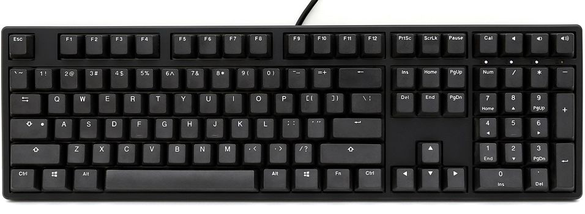

Another great thing about mechanical keyboards is that the keycaps are easily removeable and replaceable! Rarely is there a need to replace your keycaps,
but there are plenty of fun Keycaps you can have to make your keyboard look great! Below are some examples of different keycaps. Many many more options exist, so take through some more
by doing your own search!

Nothing special about these. Just your typcial black keycaps.